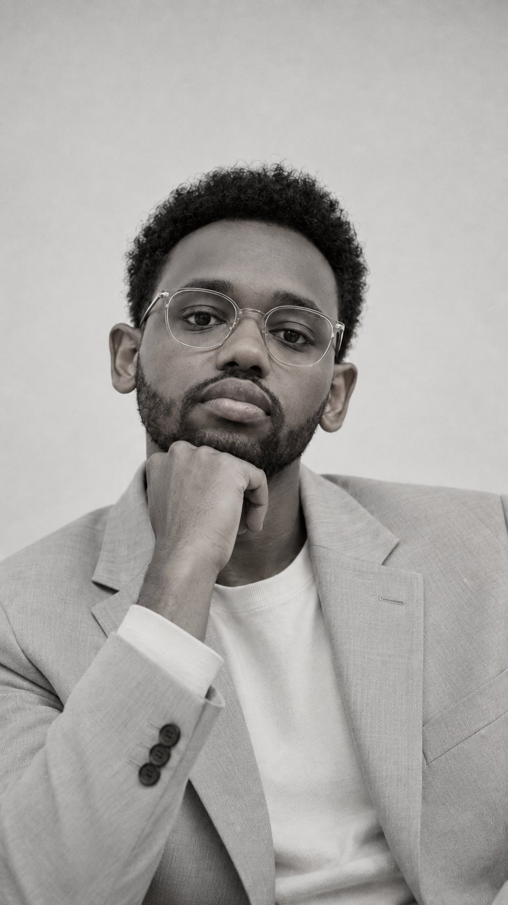
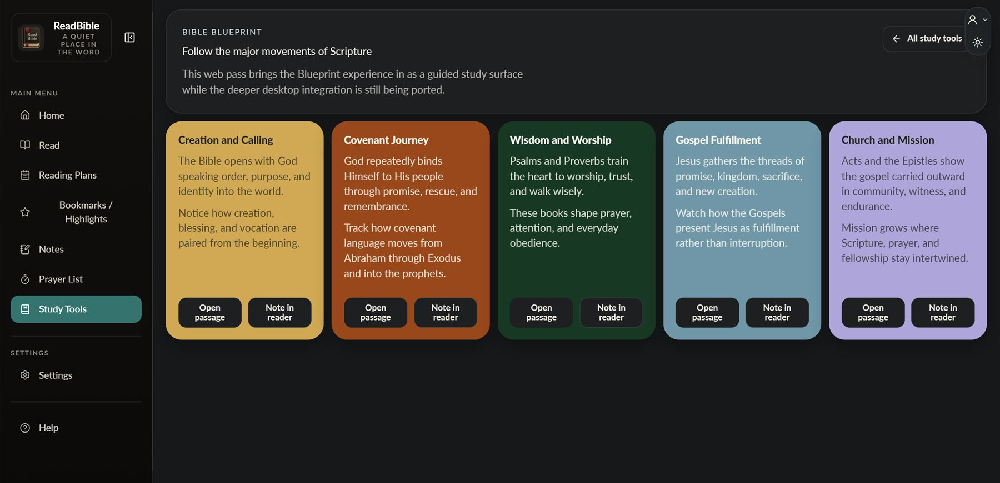

The real constraint
Every project starts with the actual constraint: who has to be convinced, what information has to be tamed, what the brand has to earn.
Hey. I’m Yohannes,
I design and build websites and apps for travel, photography, interiors, real estate, culture and faith — six flagship projects, each shipped end to end and told the same way: the brief, the calls I made, and what it added up to.

Five live sites, one shipped app
Eight projects shipped — travel, photography, interiors, real estate, culture, packaging, editorial and a reading app.
How I work
The same three moves run through all six case studies, so the work can be judged on intent rather than taste.
Every project starts with the actual constraint: who has to be convinced, what information has to be tamed, what the brand has to earn.
Each decision is written down with its reason — photography-first here, region-first navigation there — so the work explains itself.
What shipped, on what timeline, and what it does for the client today — verified, not exaggerated.
Capabilities
Four things, done properly — from the first wireframe to the live, responsive build.
Wireframing and prototyping Interface design for web and mobile Usability testing and feedback analysis Micro-interactions and motion
Logo and brand identity design Social graphics and campaign art Infographics and visual systems Custom illustration and icons
Responsive website design Landing pages and optimisation Framer and Webflow development Maintenance and iteration
Brand strategy and identity Visual style guides Typography and colour systems Brand storytelling
I’m a digital designer and Framer developer, trained in architecture. That background is why every project here starts with structure: the information, the sequence, the thing a visitor has to understand. Only then does a site get its atmosphere.
Six flagship projects — five live sites and one shipped app — plus poster, brand and editorial work in the archive.
Selected work
Each entry is a full case study. The brief, the decisions behind the design, and what shipped. Start anywhere.

Turn a mountain of destination information into a booking experience that invites instead of exhausts.

Show two capabilities at once — professional photography and modern web design — without letting either compete for attention.

Present high-end interiors and a furniture line with the same restraint and quality as the spaces themselves.

Give a luxury property brand a stage that still lets visitors find, understand and enquire about listings fast.

Give a cultural institution its first real digital presence — one that could grow without losing its voice.

Turn a Bible reader into a daily habit — study, saved scripture and prayer that never crowd the text.
Client notes
“His design transformed my travel agency business. He converted my ideas into a high-performing, visually striking website.”
Sarah YaredOwner, ETtravel
“He took the time to understand our goals and delivered a design that resonated perfectly with our audience.”
Liya WolduProduct Manager, JoyInterior
Before you write
UI/UX design, graphic design, web design, and branding support for teams and businesses.
We start with discovery, agree a direction, design and refine the work together, then prepare it for delivery.
The timeline follows the scope. Every project receives an agreed schedule before work starts.
Send an enquiry with what you are creating and the problem you want to solve.
Start a project
Send the shape of the idea — the audience, the constraint, the deadline you are working to. You get a reply within one working day, and a written scope before any work starts.